Figuras en Python - MATPLOTLIB#
Introducción#
Matplotlib es una biblioteca de gráficos 2D y 3D para generar figuras. Algunas de las ventajas de esta biblioteca incluyen:
Fácil de utilizar, y cuenta con soporte para \(\LaTeX\)
Gran control de cada elemento de una figura, como pueden ser el tamaño, la resolución oaspecto de las lineas, ejes marcadores, etc.
Salida de alta calidad en muchos formatos, incluidos PNG, PDF, SVG, EPS y PGF.
Backend de graficación interactivos que permiten explorar de forma dinámica los valores representados en las graficas
Una de las características clave de matplotlib que me gustaría enfatizar, y que creo que hace que matplotlib sea muy adecuado para generar figuras para publicaciones científicas, es que todos los aspectos de la figura pueden controlarse mediante programación. Esto es importante para la reproducir resultados y es conveniente cuando se necesita regenerar la figura con datos actualizados o cambiar su apariencia.
Se puede encontrar una gran cantidad de información al respecto en la página web de Matplotlib.
Gran parte del material de este cuaderno fue extraído y adaptado de Lecturas de Python cientifico de J.R. Johansson.
Para comenzar a utilizar Matplotlib en un programa de Python, incluya los símbolos del módulo pyplot (de manera sencilla):
import matplotlib.pyplot as plt
# importamos ademas la librería de calculo numérico numpy
import numpy as np
API similar a MATLAB#
Una forma sencilla de comenzar a utlizar Matplotib es usando el API similar a MATLAB.
Está diseñado para ser compatible con las funciones de ploteo de MATLAB, por lo que es fácil si está familiarizado con este popular programa.
Para usar esta API de matplotlib, necesitamos incluir los símbolos en el módulo pylab:
from pylab import *
Cabe destacar que en la actualidad se considera una mala práctica de programamción la importación de funciones y módulos de esta manera debido a la potencial contaminación del espacio de tarbajo que se produce.
Ejemplo#
Haremos una figura simple con la API de trazado de MATLAB. Primero generamos datos en \(x\) e \(y\):
x = np.linspace(0, 5, 10)
y = x ** 2
y luego los hacemos la gráfica:
figure()
plot(x, y, 'r')
xlabel('x')
ylabel('y')
title('title')
show()
La mayoría de las funciones relacionadas con el trazado en MATLAB están cubiertas por el módulo pylab. Por ejemplo, subplot y selección de color / símbolo:
subplot(1,2,1)
plot(x, y, 'r--')
subplot(1,2,2)
plot(y, x, 'g*-');
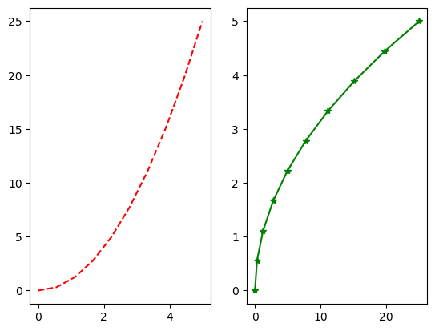
A pesar de las ventajas mencionadasnteriormente recomendaría no usar la API compatible con MATLAB para nada más que las figuras más simples.
En su lugar, recomiendo aprender y usar el API de trazado orientado a objetos de matplotlib que s notablemente poderoso. FAcilita el trabajo principalmente cuando se deben trazar figuras avanzadas con sub-figuras, inserciones y otros omponentes.
La API orientada a objetos matplotlib#
La idea principal de la programación orientada a objetos es tener objetos en los que se puedan aplicar métodos y que ningún estado del objeto o programa sea global (como el API de MATLAB). La ventaja real de este enfoque se hace evidente cuando se crea más de una figura, o cuando una figura contiene más de un componente secundario.
Para utilizar el API orientada a objetos, comenzamos como en el ejemplo anterior, pero en lugar de crear una nueva instancia de figura global, la almacenamos en una referencia en la variable fig, y a partir de ella creamos una instancia de ejes o axes usando el método add_axes en la instancia de la clase Figure, fig:
fig = plt.figure() # creamos la instancia de la figura
axes = fig.add_axes([0.1, 0.1, 0.8, 0.8]) # creamos el eje, izquierda, inferior, ancho, alto (rango 0 a 1)
axes.plot(x, y, 'r') # trazamos un un dibujo de la linea de color rojo
axes.set_xlabel('x')
axes.set_ylabel('y')
axes.set_title('title');
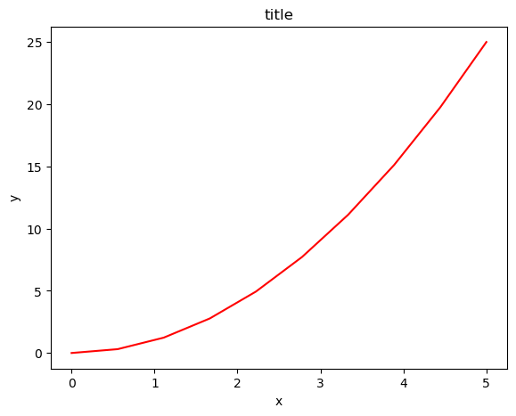
Aunque involucra poco más de código, la ventaja es que ahora tenemos el control total de dónde se colocan los ejes de trazado, y podemos agregar fácilmente más de un eje a la figura:
fig = plt.figure()
axes1 = fig.add_axes([0.1, 0.1, 0.8, 0.8]) # eje principal
axes2 = fig.add_axes([0.2, 0.5, 0.4, 0.3]) # eje interior
# figura principal
axes1.plot(x, y, 'r')
axes1.set_xlabel('x')
axes1.set_ylabel('y')
axes1.set_title('title')
# figura interior
axes2.plot(y, x, 'g')
axes2.set_xlabel('y')
axes2.set_ylabel('x')
axes2.set_title('insert title');
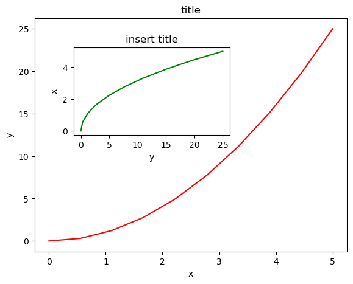
Si no nos importa ser explícitos acerca de dónde se ubican nuestros ejes de trazado en la figura, entonces podemos usar uno de los muchos administradores de diseño de ejes en matplotlib. Mi favorito es subplots, que se puede usar así:
fig, axes = plt.subplots()
axes.plot(x, y, 'r')
axes.set_xlabel('x')
axes.set_ylabel('y')
axes.set_title('title');
fig, axes = plt.subplots(nrows=1, ncols=2)
for ax in axes:
ax.plot(x, y, 'r')
ax.set_xlabel('x')
ax.set_ylabel('y')
ax.set_title('title')
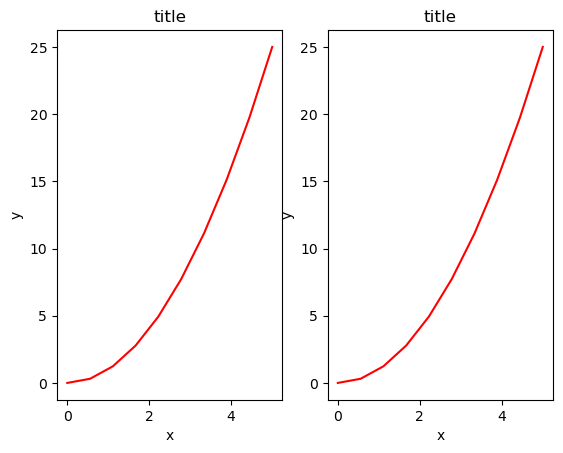
Nota que la figura anterior resultó facíl de hacer pero tiene un error en la ubicación de las leyendas. Las mismas se superponen con al figura adyacente.
Podemos lidiar con eso usando el método fig.tight_layout, que ajusta automáticamente las posiciones de los ejes en la ventana de la figura para que no haya contenido superpuesto:
fig, axes = plt.subplots(nrows=1, ncols=2)
for ax in axes:
ax.plot(x, y, 'r')
ax.set_xlabel('x')
ax.set_ylabel('y')
ax.set_title('title')
fig.tight_layout()
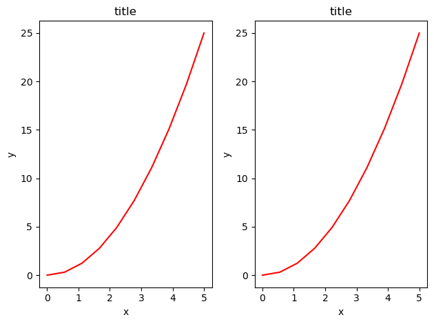
Tamaño de la figura, relación de aspecto y DPI#
Matplotlib permite especificar la relación de aspecto, el DPI y el tamaño de la figura cuando se crea el objeto de la clase Figure, utilizando los argumentos claves figsize y dpi. figsize es una tupla del ancho y alto de la figura en pulgadas, y dpi es la cantidad de pixels por pulgada. Para crear una figura de 800x400 pixels, 100 puntos por pulgada (DPI), podemos hacer:
fig = plt.figure(figsize=(8,4), dpi=100);
<Figure size 800x400 with 0 Axes>
Los mismos argumentos también se pueden pasar a los gestores de diseño de figuras , como la función subplots:
fig, axes = plt.subplots(figsize=(12,3))
axes.plot(x, y, 'r')
axes.set_xlabel('x')
axes.set_ylabel('y')
axes.set_title('title');
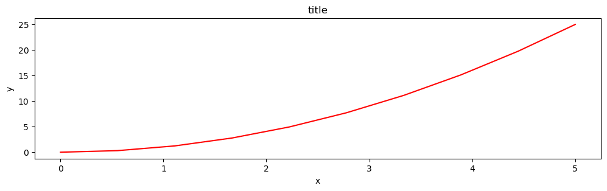
Guardado de las figuras#
Para guardar una figura en un archivo, podemos utilizar el método savefig en la clase Figure:
fig.savefig("filename.png")
Aquí también podemos especificar opcionalmente el DPI y elegir entre diferentes formatos de salida:
fig.savefig("filename.png", dpi=200)
Elección del formato de la figura#
Matplotlib puede generar resultados de alta calidad en varios formatos, incluidos PNG, JPG, EPS, SVG, PGF y PDF. Para artículos científicos, recomiendo usar PDF siempre que sea posible. (Los documentos LaTeX compilados con pdflatex pueden incluir archivos PDF usando el comando includegraphics). En algunos casos, PGF también puede ser una buena alternativa.
Leyendas, etiquetas y títulos#
Ahora que hemos cubierto los conceptos básicos de cómo crear un una area de trazado o lienzo de la figura y agregar instancias de ejes al mismo, veamos cómo decorar una figura con títulos, etiquetas de ejes y leyendas.
Títulos de las figuras#
Se puede agregar un título a cada instancia de eje en una figura. Para establecer el título, use el método set_title en la instancia de los ejes:
ax.set_title("title");
Nombres de eje#
De manera similar, con los métodos set_xlabel y set_ylabel, podemos establecer los nombres o etiquetas de los ejes X e Y:
ax.set_xlabel("x")
ax.set_ylabel("y");
Leyendas#
Las leyendas para las curvas en una figura se pueden agregar de dos maneras. Un método es usar el método legend del objeto de eje y pasar una lista/tupla de textos de leyenda para las curvas definidas previamente:
ax.legend(["curva1", "curva2", "curva3"]);
El método descrito anteriormente sigue la API de MATLAB. Es algo propenso a errores y no es flexible si se agregan o eliminan curvas de la figura (lo que resulta en una curva mal etiquetada).
Un método mejor es usar como argumento la palabra clave label="label text" cuando se agregan sub-figuras u otros objetos a la figura, y luego usar el método legend sin argumentos para agregar la leyenda a la figura:
ax.plot(x, x**2, label="curva1")
ax.plot(x, x**3, label="curva2")
ax.legend();
La ventaja de este método es que si se agregan o eliminan curvas de la figura, la leyenda se actualiza automáticamente en consecuencia.
La función legend toma un argumento de palabra clave opcional loc que se puede usar para especificar dónde se dibujará la leyenda en la figura. Los valores permitidos de loc son códigos numéricos para los distintos lugares donde se puede dibujar la leyenda. En la documentación de Matplotlib se puede encontrar más información al respecto.
Algunos de los valores más comunes de loc son:
ax.legend(loc=0) # matplotlib decide la ubicación óptima
ax.legend(loc=1) # arriba a la derecha
ax.legend(loc=2) # arriba a la izquierda
ax.legend(loc=3) # abajo a la izquierda
ax.legend(loc=4); # abajo a la derecha
# .. many more options are available
En el siguiente ejemplo se muestra cómo usar el título de la figura, las etiquetas de los ejes y las leyendas descritas anteriormente:
fig, ax = plt.subplots()
ax.plot(x, x**2, label="y = x**2")
ax.plot(x, x**3, label="y = x**3")
ax.legend(loc=2); # arriba a la izquierda
ax.set_xlabel('x')
ax.set_ylabel('y')
ax.set_title('title');
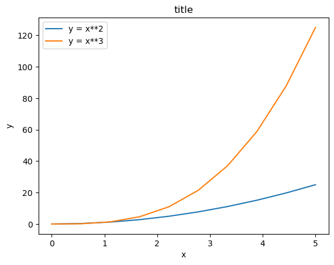
Formato de texto: LaTeX, tamaño de fuente, familia de fuentes#
La figura anterior es funcional, pero (aún) no cumple los criterios de una figura utilizada en una publicación. Primero y ante todo, necesitamos tener texto con formato LaTeX, y segundo, debemos poder ajustar el tamaño de la fuente para que aparezca en una publicación.
Matplotlib tiene un gran soporte para LaTeX. Todo lo que tenemos que hacer es usar signos de dólar para encapsular LaTeX en cualquier texto (leyenda, título, etiqueta, etc.). Por ejemplo, "$y=x^3$".
Pero aquí podemos encontrar un problema ligeramente sutil con el código LaTeX y las cadenas de texto de Python. En LaTeX, frecuentemente usamos la barra invertida en los comandos, por ejemplo \alpha para producir el símbolo \(\alpha\). Pero la barra invertida ya tiene un significado en las cadenas de Python (el carácter del código de escape). Para evitar que Python estropee nuestro código de látex, necesitamos usar cadenas de texto «sin procesar». Las cadenas de texto sin formato se añaden con una “r”, como r"\alpha" o r'\alpha' en lugar de "\alpha" o '\alpha':
fig, ax = plt.subplots()
ax.plot(x, x**2, label=r"$y = \alpha^2$")
ax.plot(x, x**3, label=r"$y = \alpha^3$")
ax.legend(loc=2) # upper left corner
ax.set_xlabel(r'$\alpha$', fontsize=18)
ax.set_ylabel(r'$y$', fontsize=18)
ax.set_title('title');
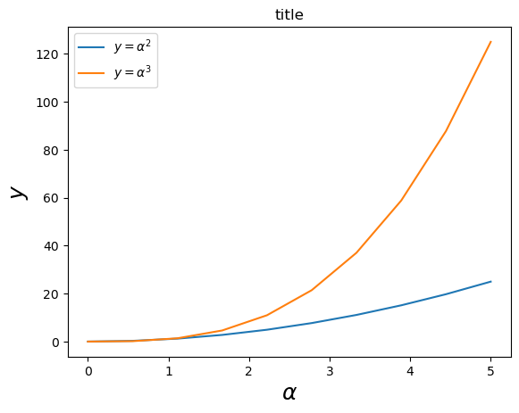
También podemos cambiar el tamaño de fuente global y la familia de fuentes, que se aplica a todos los elementos de texto en una figura (etiquetas y títulos de ejes, leyendas, etc.):
# Actualiza los parámetros de configuración de Matplotlib
# matplotlib.rcParams.update({'font.size': 18, 'font.family': 'serif'})
Una buena elección de fuentes globales son las fuentes STIX:
# matplotlib.rcParams.update({'font.size': 18, 'font.family': 'STIXGeneral', 'mathtext.fontset': 'stix'})
Configuración de colores, tipos de línea y marcadores#
Colores#
Con matplotlib se puede definir los colores de las lineas y de otros elementos gráficos de varias maneras.
Podemos usar una sintaxis parecida a la de MATLAB donde 'b' significa blue (azul), 'g' significa green (verde), etc. Matplotlib también soporta el API de MATLAB para seleccionar estilos de lineas: donde, por ejemplo, 'b.-' significa azul con linea estilo linea punto.
# MATLAB style line color and style
ax.plot(x, x**2, 'b.-') # blue line with dots
ax.plot(x, x**3, 'g--') # green dashed line
[<matplotlib.lines.Line2D at 0x7ff1b8338e50>]
También podemos definir los colores por sus nombres o códigos hexadecimales RGB y, opcionalmente, proporcionar un valor alfa utilizando los argumentos de las palabras clave color y alpha:
fig, ax = plt.subplots()
ax.plot(x, x+1, color="red", alpha=0.5) # transparencia media
ax.plot(x, x+2, color="#1155dd") # código hexadecimal RGB para un color azulado
ax.plot(x, x+3, color="#15cc55"); # # código hexadecimal RGB para un color verdoso
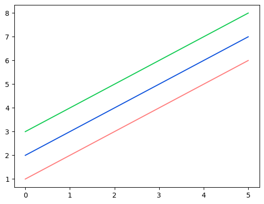
Estilos de líneas y marcadores#
Para cambiar el ancho de línea, podemos usar el argumento de la palabra clave linewidth o lw. El estilo de línea se puede seleccionar usando los argumentos de la palabra clave linestyle o ls:
fig, ax = plt.subplots(figsize=(12,6))
ax.plot(x, x+1, color="blue", lw=0.25) # lw=linewidth
ax.plot(x, x+2, color="blue", lw=0.50)
ax.plot(x, x+3, color="blue", lw=1.00)
ax.plot(x, x+4, color="blue", lw=2.00)
# posibles opciones de tipos de linea ‘-‘, ‘--’, ‘-.’, ‘:’, ‘steps’
ax.plot(x, x+5, color="red", lw=2, ls='-')
ax.plot(x, x+6, color="red", lw=2, ls='-.')
ax.plot(x, x+7, color="red", lw=2, ls=':')
# trazo a tramos personalizado
line, = ax.plot(x, x+8, color="black", lw=1.50)
line.set_dashes([5, 10, 15, 10]) # formato: largo de linea, largo del espacio, ...
# símbolos de marcadores posibles: marker = '+', 'o', '*', 's', ',', '.', '1', '2', '3', '4', ...
ax.plot(x, x+ 9, color="green", lw=2, ls='--', marker='+')
ax.plot(x, x+10, color="green", lw=2, ls='--', marker='o')
ax.plot(x, x+11, color="green", lw=2, ls='--', marker='s')
ax.plot(x, x+12, color="green", lw=2, ls='--', marker='1')
# tamaño y color de los marcadores
ax.plot(x, x+13, color="purple", lw=1, ls='-', marker='o', markersize=2)
ax.plot(x, x+14, color="purple", lw=1, ls='-', marker='o', markersize=4)
ax.plot(x, x+15, color="purple", lw=1, ls='-', marker='o', markersize=8, markerfacecolor="red")
ax.plot(x, x+16, color="purple", lw=1, ls='-', marker='s', markersize=8,
markerfacecolor="yellow", markeredgewidth=2, markeredgecolor="blue");
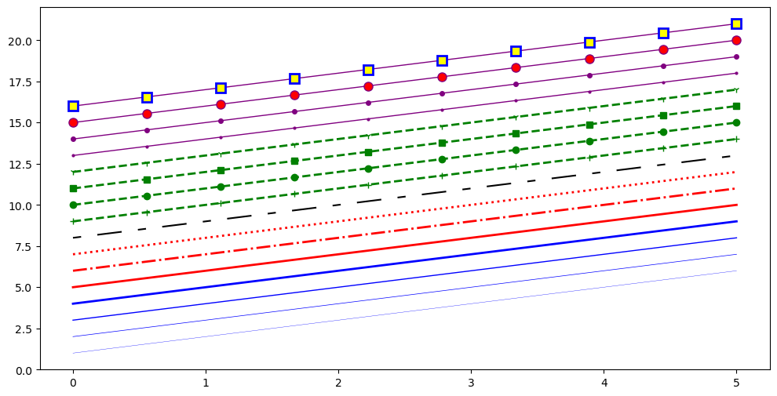
Control sobre la apariencia del eje#
La apariencia de los ejes es un aspecto importante de una figura. Se necesita controlar dónde se colocan las marcas y las etiquetas, modificar el tamaño de la fuente y posiblemente las etiquetas utilizadas en los ejes. En esta sección veremos cómo controlar esas propiedades en una figura de matplotlib.
Rango#
Lo primero que podríamos querer configurar es el rango de los ejes. Podemos hacerlo utilizando los métodos set_ylim y set_xlim en el objeto de eje, o axis('tight') para obtener rangos de ejes «ajustados» de manera automática:
fig, axes = plt.subplots(1, 3, figsize=(12, 4))
axes[0].plot(x, x**2, x, x**3)
axes[0].set_title("rangos default de los ejes")
axes[1].plot(x, x**2, x, x**3)
axes[1].axis('tight')
axes[1].set_title("Ejes ajustados 'apretados' axes")
axes[2].plot(x, x**2, x, x**3)
axes[2].set_ylim([0, 60])
axes[2].set_xlim([2, 5])
axes[2].set_title("Rango de los ejes personalizados");
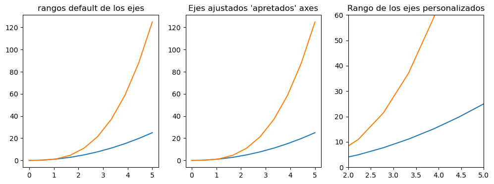
Escala logarítmica#
También es posible establecer una escala logarítmica para uno o ambos ejes. De hecho, esta funcionalidad es solo una aplicación de un sistema de transformación más general en Matplotlib. Cada una de las escalas de los ejes se establece por separado utilizando los métodos set _xscale y set_yscale que aceptan un parámetro (con el valor «log» en este caso):
fig, axes = plt.subplots(1, 2, figsize=(10,4))
axes[0].plot(x, x**2, x, np.exp(x))
axes[0].set_title("Normal scale")
axes[1].plot(x, x**2, x, np.exp(x))
axes[1].set_yscale("log")
axes[1].set_title("Logarithmic scale (y)");
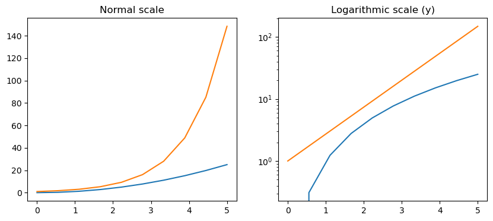
Ubicación de las etiquetas y etiquetas personalizadas#
Podemos determinar explícitamente dónde queremos que los ticks del eje con set_xticks y set_yticks, que toman una lista de valores para los lugares donde se colocarán los tics en el eje. También podemos usar los métodos set_xticklabels y set_yticklabels para proporcionar una lista de etiquetas de texto personalizadas para cada ubicación de marca:
fig, ax = plt.subplots(figsize=(10, 4))
ax.plot(x, x**2, x, x**3, lw=2)
ax.set_xticks([1, 2, 3, 4, 5])
ax.set_xticklabels([r'$\alpha$', r'$\beta$', r'$\gamma$', r'$\delta$', r'$\epsilon$'], fontsize=18)
yticks = [0, 50, 100, 150]
ax.set_yticks(yticks)
ax.set_yticklabels(["$%.1f$" % y for y in yticks], fontsize=18); # usa latex para formatear los tics
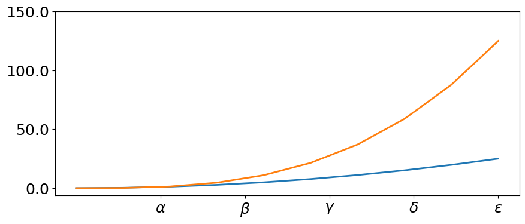
Hay una serie de métodos más avanzados para controlar la colocación de marcas mayores y menores en las cifras de matplotlib, como la ubicación automática de acuerdo con diferentes políticas. Es coveniente consultar la documentación de matplotlib para obtener más información.
Notación científica#
Con números grandes en los ejes, a menudo es mejor usar la notación científica:
fig, ax = plt.subplots(1, 1)
ax.plot(x, x**2, x, np.exp(x))
ax.set_title("Notación científica")
ax.set_yticks([0, 50, 100, 150])
from matplotlib import ticker
formatter = ticker.ScalarFormatter(useMathText=True)
formatter.set_scientific(True)
formatter.set_powerlimits((-1,1))
ax.yaxis.set_major_formatter(formatter)
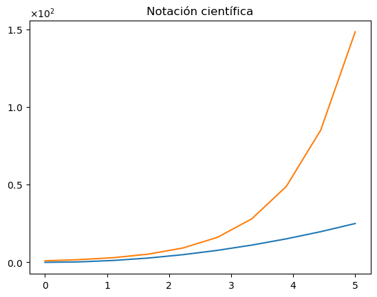
Número de eje y espaciado de la etiqueta del eje#
# distancia entre x e y y el numero del eje
matplotlib.rcParams['xtick.major.pad'] = 5
matplotlib.rcParams['ytick.major.pad'] = 5
fig, ax = plt.subplots(1, 1)
ax.plot(x, x**2, x, np.exp(x))
ax.set_yticks([0, 50, 100, 150])
ax.set_title("label and axis spacing")
# separación entre la etiqueta del eje y los números del eje
ax.xaxis.labelpad = 5
ax.yaxis.labelpad = 5
ax.set_xlabel("x")
ax.set_ylabel("y");
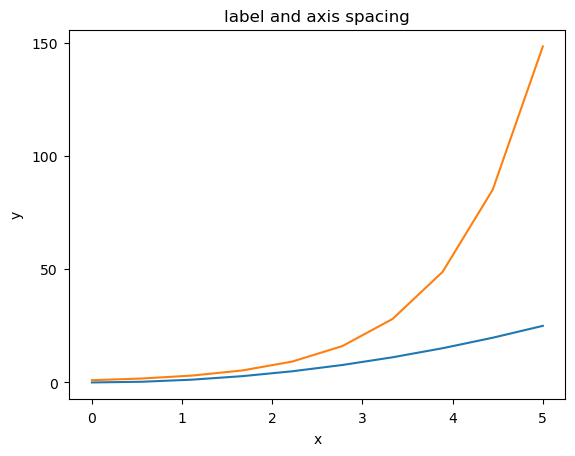
# Recuperamos los valores por defecto
matplotlib.rcParams['xtick.major.pad'] = 3
matplotlib.rcParams['ytick.major.pad'] = 3
Ajustes de posición del eje#
Desafortunadamente, al guardar figuras, las etiquetas a veces se recortan, y puede ser necesario ajustar un poco las posiciones de los ejes. Esto se puede hacer usando subplots_adjust:
fig, ax = plt.subplots(1, 1)
ax.plot(x, x**2, x, np.exp(x))
ax.set_yticks([0, 50, 100, 150])
ax.set_title("title")
ax.set_xlabel("x")
ax.set_ylabel("y")
fig.subplots_adjust(left=0.15, right=.9, bottom=0.1, top=0.9)
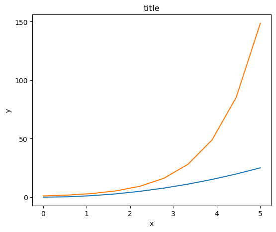
Grillas#
Con el método grid en el objeto de eje, podemos activar y desactivar líneas de cuadrícula detras de la figura. También podemos personalizar el aspecto de las mismas utilizando los mismos argumentos para ajustas las lineas con la función plot:
fig, axes = plt.subplots(1, 2, figsize=(10,3))
# apariencia default de la grilla
axes[0].plot(x, x**2, x, x**3, lw=2)
axes[0].grid(True)
# apariencia de la grilla personalizada
axes[1].plot(x, x**2, x, x**3, lw=2)
axes[1].grid(color='b', alpha=0.5, linestyle='dashed', linewidth=0.5)
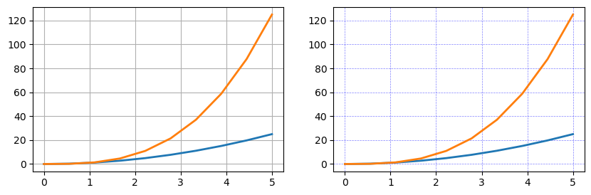
Lineas de eje#
También podemos cambiar las propiedades de las lineas de los ejes:
fig, ax = plt.subplots(figsize=(6,2))
ax.spines['bottom'].set_color('blue')
ax.spines['top'].set_color('blue')
ax.spines['left'].set_color('red')
ax.spines['left'].set_linewidth(2)
# sacamos las lineas del lado de la derecha
ax.spines['right'].set_color("none")
ax.yaxis.tick_left() # ponemos solos los tics de la izquierda
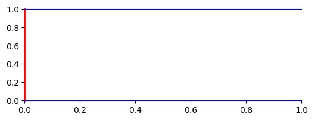
Ejes gemelos#
A veces es útil tener ejes x o y duales en una figura; por ejemplo, al trazar curvas con diferentes unidades juntas. Matplotlib admite esto con las funciones twinx y twiny:
fig, ax1 = plt.subplots()
ax1.plot(x, x**2, lw=2, color="blue")
ax1.set_ylabel(r"area $(m^2)$", fontsize=18, color="blue")
for label in ax1.get_yticklabels():
label.set_color("blue")
ax2 = ax1.twinx()
ax2.plot(x, x**3, lw=2, color="red")
ax2.set_ylabel(r"volume $(m^3)$", fontsize=18, color="red")
for label in ax2.get_yticklabels():
label.set_color("red")
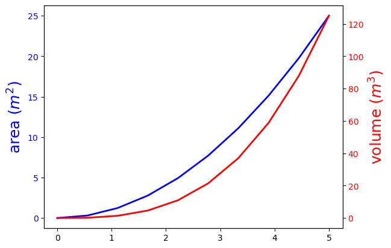
Ejes donde x e y son cero#
fig, ax = plt.subplots()
ax.spines['right'].set_color('none')
ax.spines['top'].set_color('none')
ax.xaxis.set_ticks_position('bottom')
ax.spines['bottom'].set_position(('data',0)) # set position of x spine to x=0
ax.yaxis.set_ticks_position('left')
ax.spines['left'].set_position(('data',0)) # set position of y spine to y=0
xx = np.linspace(-0.75, 1., 100)
ax.plot(xx, xx**3);
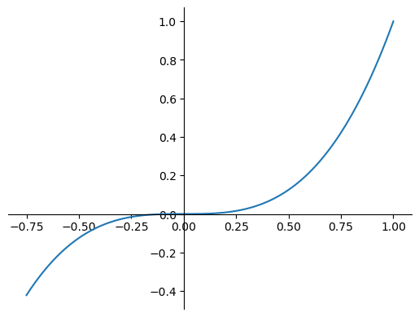
Otros estilos de trama 2D#
Además del método regular “plot”, hay una serie de otras funciones para generar diferentes tipos de gráficos. La galería de gráficos de matplotlib contiene una lista completa de los tipos de gráficos disponibles. Algunos de los más útiles se muestran a continuación:
n = np.array([0,1,2,3,4,5])
fig, axes = plt.subplots(1, 4, figsize=(12,3))
axes[0].scatter(xx, xx + 0.25*np.random.randn(len(xx)))
axes[0].set_title("scatter")
axes[1].step(n, n**2, lw=2)
axes[1].set_title("step")
axes[2].bar(n, n**2, align="center", width=0.5, alpha=0.5)
axes[2].set_title("bar")
axes[3].fill_between(x, x**2, x**3, color="green", alpha=0.5);
axes[3].set_title("fill_between");
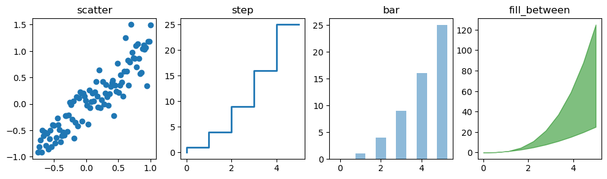
# gráfico polar usando add_axes y una proyección polar
fig = plt.figure()
ax = fig.add_axes([0.0, 0.0, .6, .6], polar=True)
t = np.linspace(0, 2 * np.pi, 100)
ax.plot(t, t, color='blue', lw=3);
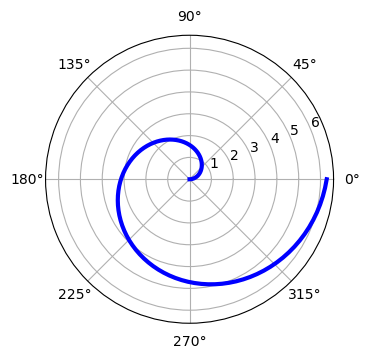
# Un histograma
n = np.random.randn(100000)
fig, axes = plt.subplots(1, 2, figsize=(12,4))
axes[0].hist(n)
axes[0].set_title("Default histogram")
axes[0].set_xlim((min(n), max(n)))
axes[1].hist(n, cumulative=True, bins=50)
axes[1].set_title("Cumulative detailed histogram")
axes[1].set_xlim((min(n), max(n)));
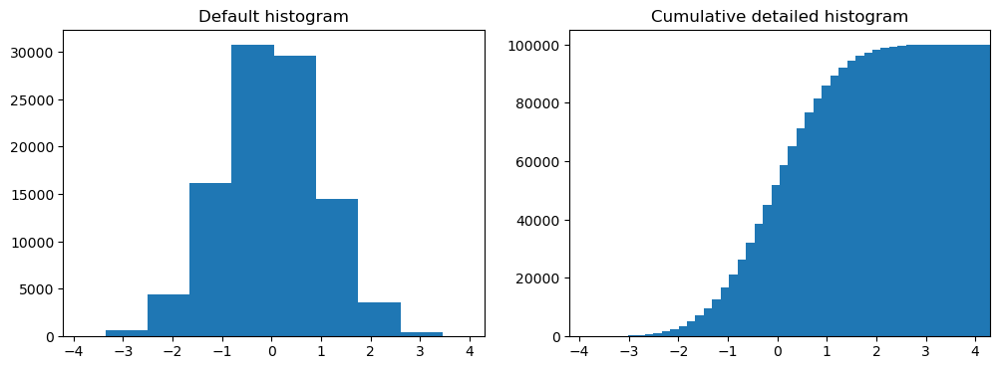
Anotación de texto#
La anotación de texto en las figuras de matplotlib se puede hacer usando la función text. Admite el formateo LaTeX al igual que los textos y títulos de etiquetas de ejes:
fig, ax = plt.subplots()
ax.plot(xx, xx**2, xx, xx**3)
ax.text(0.15, 0.2, r"$y=x^2$", fontsize=20, color="blue")
ax.text(0.65, 0.1, r"$y=x^3$", fontsize=20, color="green");
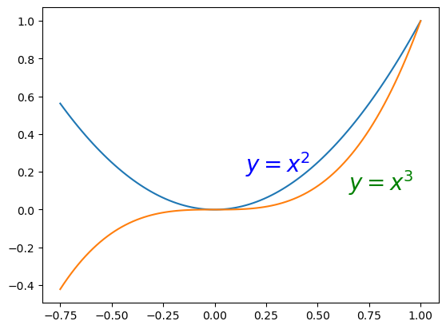
Figuras con múltiples sub-figuras e inserciones#
Los ejes se pueden agregar a una figura de matplotlib manualmente usando fig.add_axes o usando un administrador de diseño de sub-figuras como subplots, subplot2grid o gridspec:
subplots#
fig, ax = plt.subplots(2, 3)
fig.tight_layout()
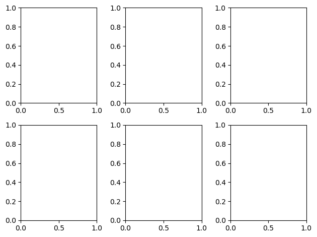
subplot2grid#
fig = plt.figure()
ax1 = plt.subplot2grid((3,3), (0,0), colspan=3)
ax2 = plt.subplot2grid((3,3), (1,0), colspan=2)
ax3 = plt.subplot2grid((3,3), (1,2), rowspan=2)
ax4 = plt.subplot2grid((3,3), (2,0))
ax5 = plt.subplot2grid((3,3), (2,1))
fig.tight_layout()
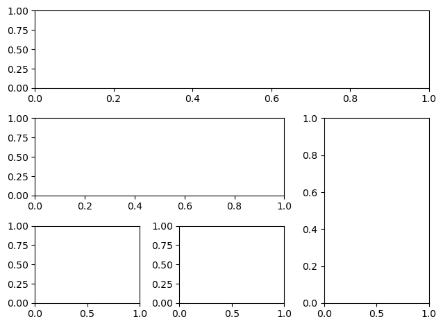
gridspec#
import matplotlib.gridspec as gridspec
fig = plt.figure()
gs = gridspec.GridSpec(2, 3, height_ratios=[2,1], width_ratios=[1,2,1])
for g in gs:
ax = fig.add_subplot(g)
fig.tight_layout()
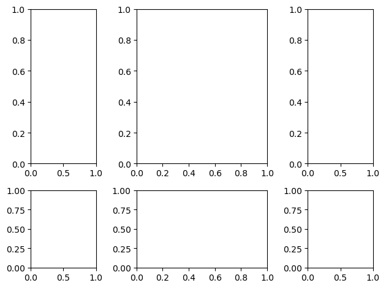
add_axes#
La adición manual de ejes con add_axes es útil para agregar inserciones a las figuras:
fig, ax = plt.subplots()
ax.plot(xx, xx**2, xx, xx**3)
fig.tight_layout()
# interno
inset_ax = fig.add_axes([0.2, 0.55, 0.35, 0.35]) # X, Y, ancho, alto
inset_ax.plot(xx, xx**2, xx, xx**3)
inset_ax.set_title('zoom cerca del origen')
# set axis range
inset_ax.set_xlim(-.2, .2)
inset_ax.set_ylim(-.005, .01)
# set axis tick locations
inset_ax.set_yticks([0, 0.005, 0.01])
inset_ax.set_xticks([-0.1,0,.1]);
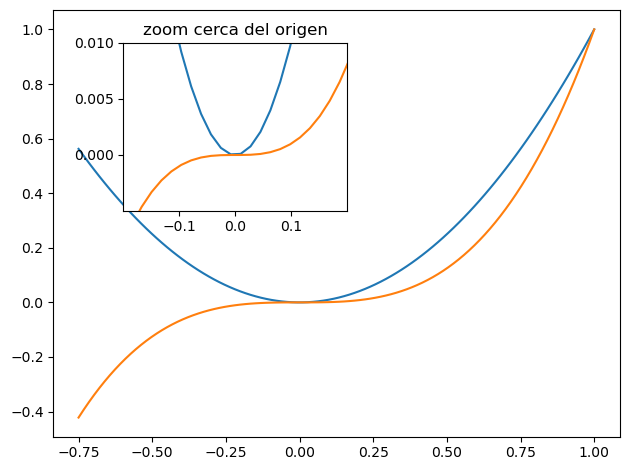
Figuras de colores y contornos#
Los mapas de colores y las figuras de contorno son útiles para trazar funciones de dos variables. En la mayoría de estas funciones, utilizaremos un mapa de colores para codificar una dimensión de los datos. Hay una serie de mapas de color predefinidos. Es relativamente sencillo definir mapas de colores personalizados. Para obtener una lista de mapas de colores predefinidos, consulte aquí
alpha = 0.7
phi_ext = 2 * np.pi * 0.5
def flux_qubit_potential(phi_m, phi_p):
return 2 + alpha - 2 * np.cos(phi_p) * np.cos(phi_m) - alpha * np.cos(phi_ext - 2*phi_p)
phi_m = np.linspace(0, 2*np.pi, 100)
phi_p = np.linspace(0, 2*np.pi, 100)
X,Y = np.meshgrid(phi_p, phi_m)
Z = flux_qubit_potential(X, Y).T
pcolor#
fig, ax = plt.subplots()
p = ax.pcolor(X/(2*np.pi), Y/(2*np.pi), Z, cmap=matplotlib.cm.RdBu, vmin=abs(Z).min(), vmax=abs(Z).max(), shading='auto')
cb = fig.colorbar(p, ax=ax)
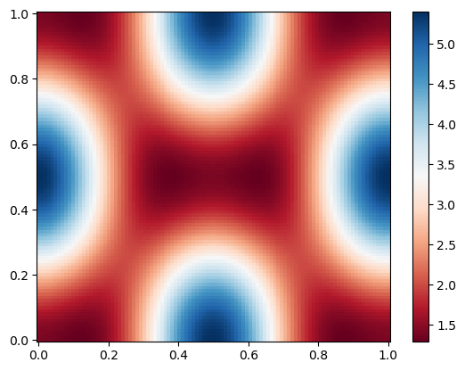
imshow#
fig, ax = plt.subplots()
im = ax.imshow(Z, cmap=matplotlib.cm.RdBu, vmin=abs(Z).min(), vmax=abs(Z).max(), extent=[0, 1, 0, 1])
im.set_interpolation('bilinear')
cb = fig.colorbar(im, ax=ax)
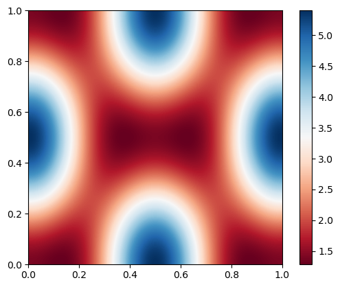
contour#
fig, ax = plt.subplots()
cnt = ax.contour(Z, cmap=matplotlib.cm.RdBu, vmin=abs(Z).min(), vmax=abs(Z).max(), extent=[0, 1, 0, 1])
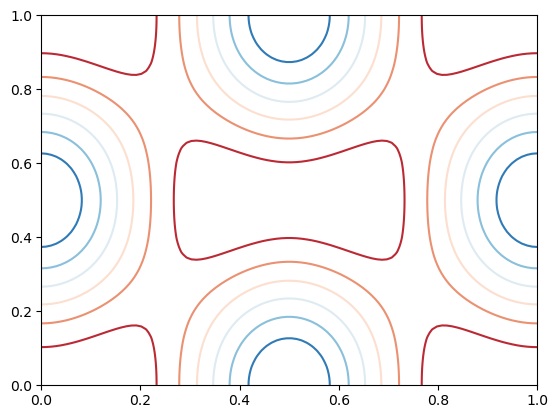